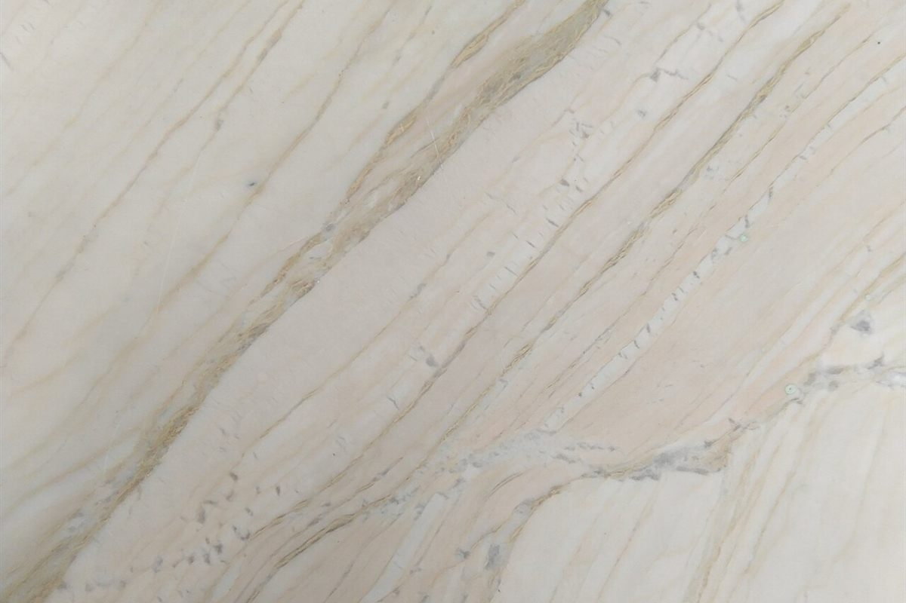
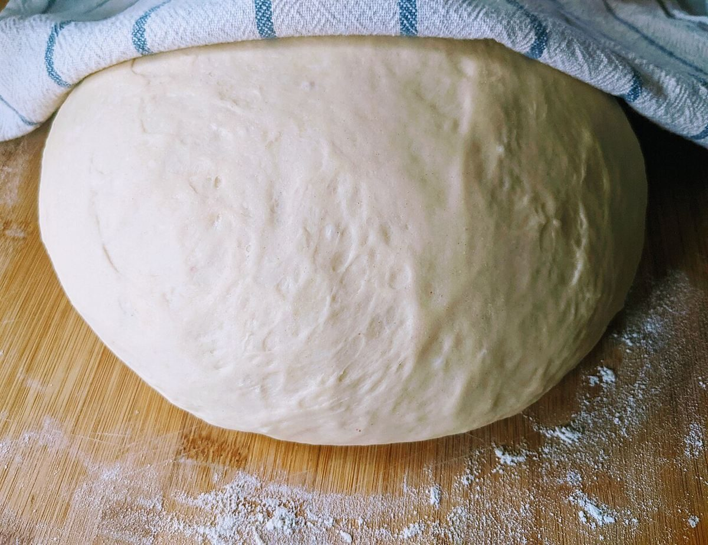
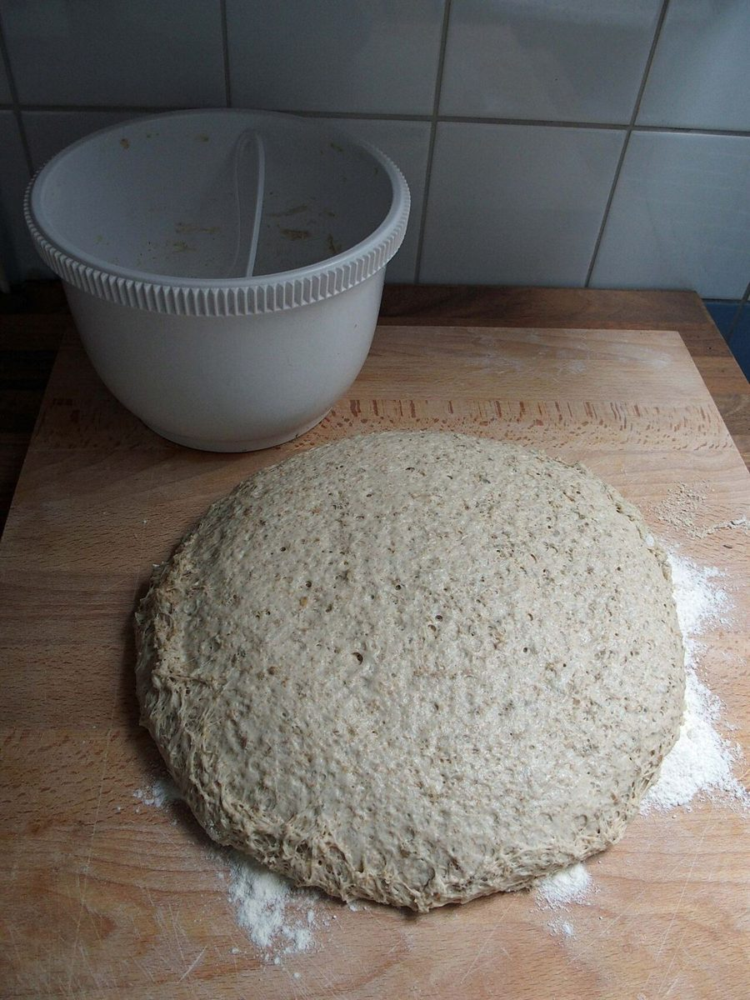
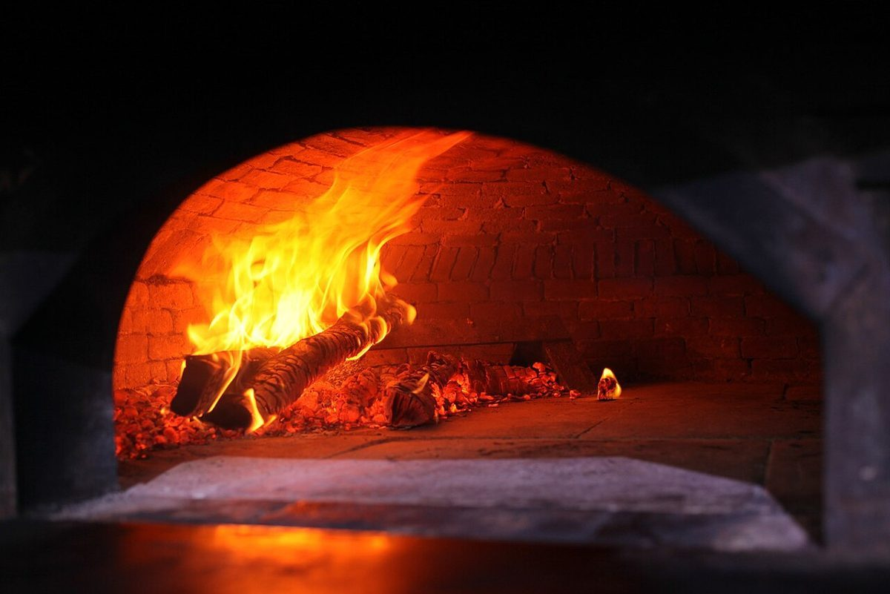

店のこと
店のこと
確認できているのは、所在地とInstagramだけです。
「想像してみる」部分は、制作側が想像して書いたものです。お店の実際の様子・考え・メニューとは関係がありません。
確認できていること
- 店名は「sasaya」、業種はカフェ
- 所在地は岡山県高梁市下谷町4843-3(〒716-0042)
- Instagramのアカウント名に「coffee」「bagel」の文字がありますが、提供内容は確認できていません
- 電話番号はなし。連絡はInstagramから
- 営業時間・定休日・メニュー・価格・ご予約・駐車場は準備中

想像してみる
「ささや」の音から
「ささや」と声に出してみると、息の多い、やわらかな音になります。
想像…そんな小さな声で話したくなる場所かもしれない、と制作側は想像しました(実際のお店の姿ではありません)。



上の3枚は、パンづくりの工程をイメージしたフリー素材です。お店の工程や設備を示すものではありません。